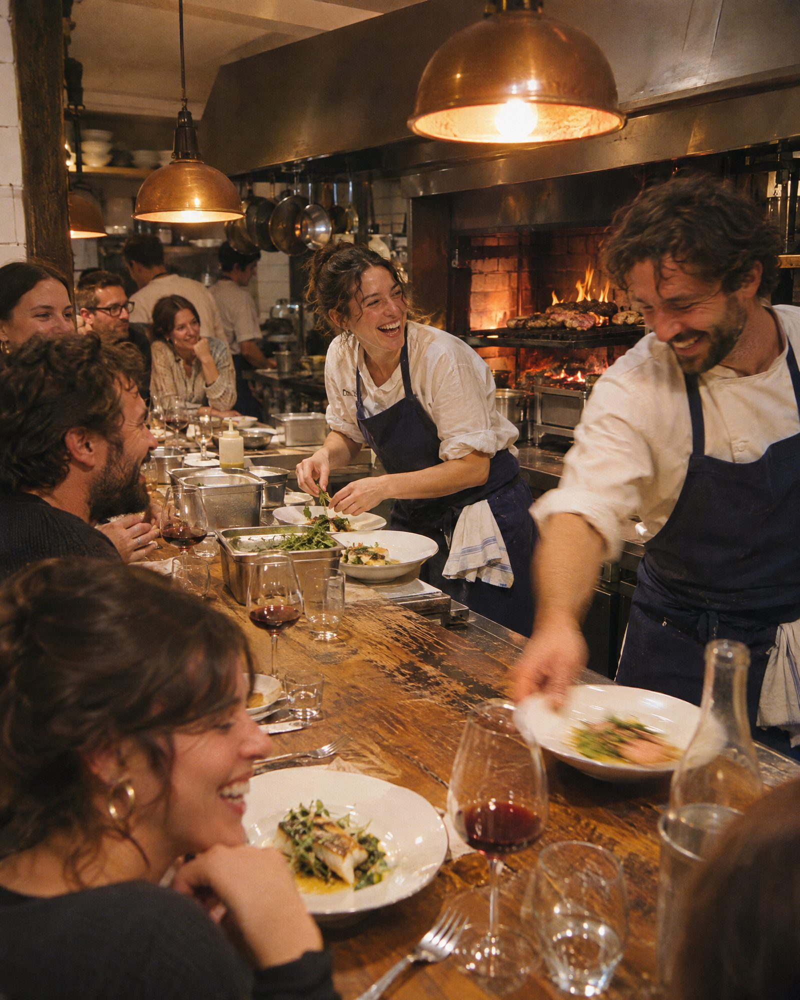
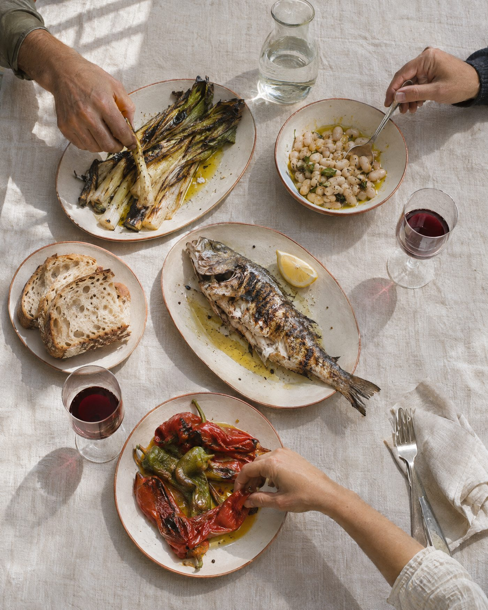
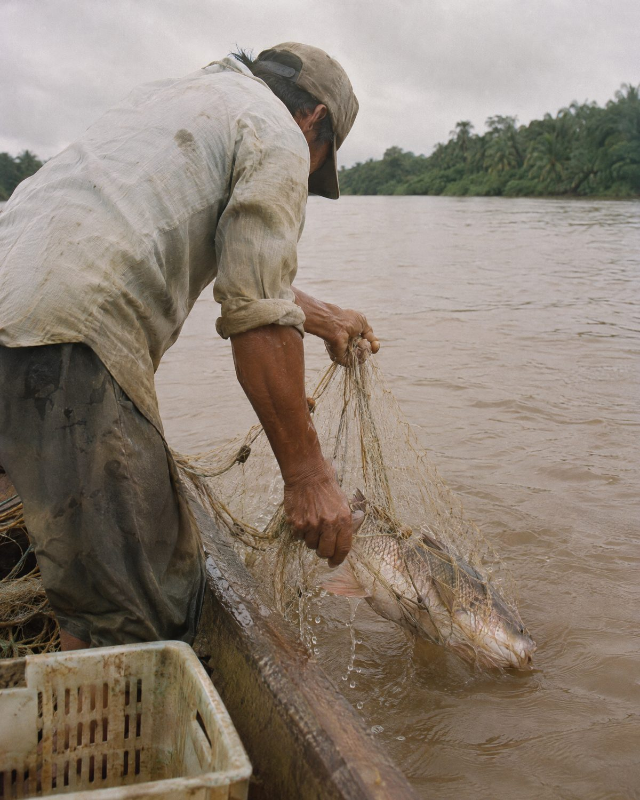
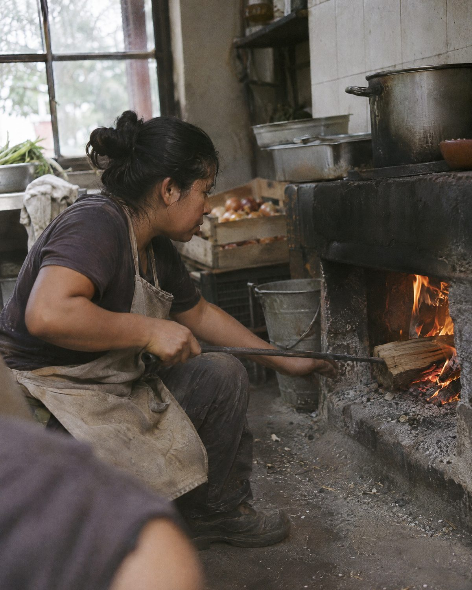
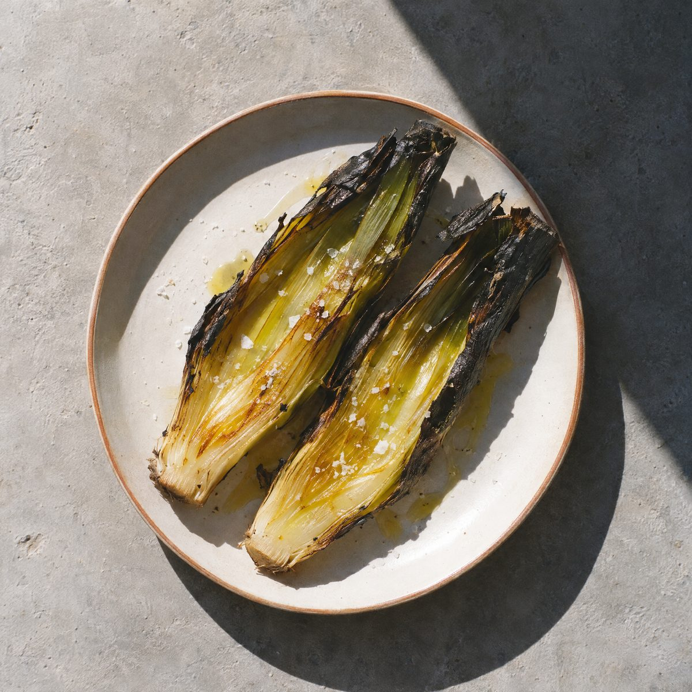
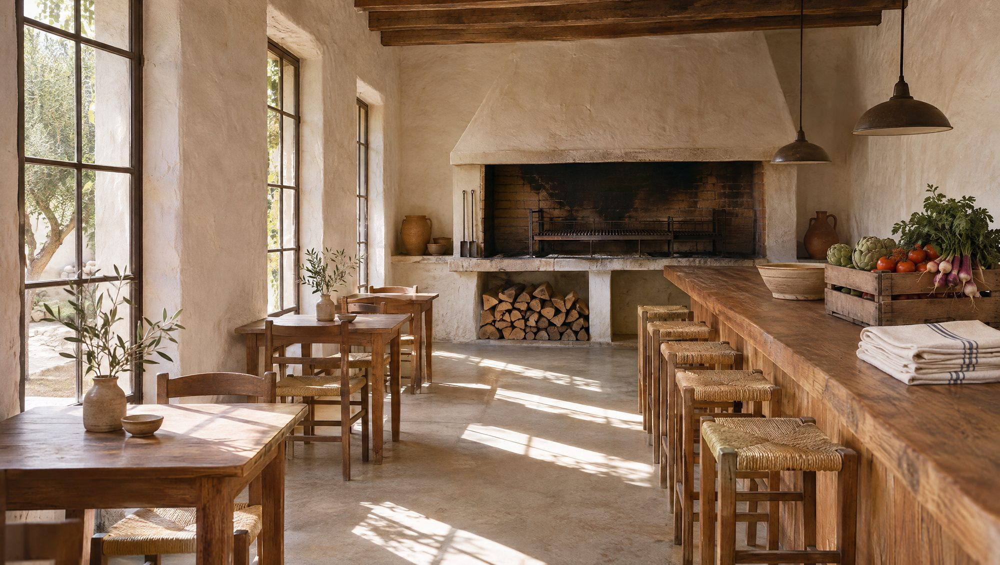
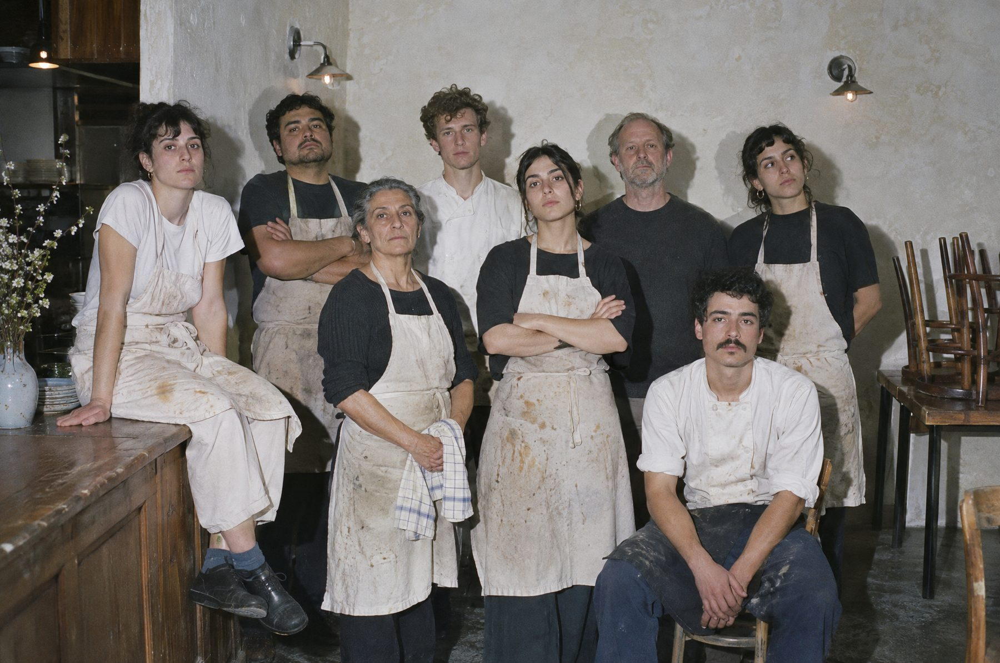

Jueves 20 de noviembre
Cocina
Ana
Ferreyra
Humo y frutas del monte
Esta semana ·
Cocina a las brasas. Cuarenta cubiertos.
Martes a sábado, solo con reserva.

Brígida es una cocina de fuego para cuarenta personas. La carta es corta y cambia según lo que llega del río y de la huerta. Si no hay, no hay.
Reservar una mesa →Precios en pesos. La carta se escribe cada tarde.




Una vez por mes cocina alguien de afuera. Mismo fuego, otra carta.
Jueves 20 de noviembre
Humo y frutas del monte
Jueves 11 de diciembre
Con tres bodegas chicas
Sábado 27 de diciembre
Una sola mesa larga
Elige un horario libre. La mesa se guarda quince minutos.
La disponibilidad cambia mientras miras.
Te confirmamos por WhatsApp.
Esto es una demostración: Brígida es un proyecto de concepto de NEA Sistemas y no toma reservas reales.

